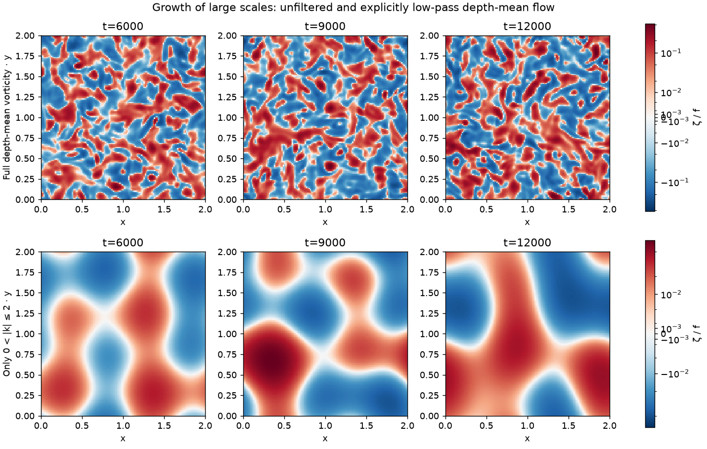
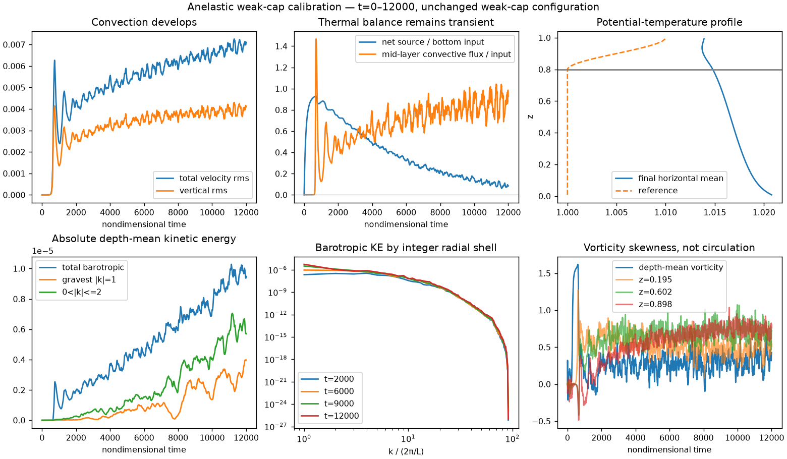

Anelastic convection through t=12000
Large-scale flow strengthens; anticyclonic LSV selection remains unestablished. The lowest modes contain about 60% of the final depth-mean energy. Thermal storage has fallen to 8.4% of input, but the upper cap remains partly unstable.
Complete t=0–12000, nondimensional time—not Earth days. All 2401 saved frames at 12 fps (3 min 20 s). Vorticity above passive tracer at z=0.1953, 0.6016 and 0.8984. Positive ζ/f is cyclonic. All times and depths share fixed full-range color scales.
Large-scale energy keeps growing
The unchanged t=6000–12000 continuation completed in 27 min 19 s on one H100 80 GB, with successful restart and validity checks. It adds 47.85 recorded convective turnovers, bringing the cumulative count to about 79.67, using ∫urmsdt/0.8. No additional simulation or physical change was made for this analysis.
| Instantaneous diagnostic | t=6000 | t=9000 | t=12000 |
|---|---|---|---|
| Total depth-mean kinetic energy | 4.28e-06 | 7.06e-06 | 9.47e-06 |
| Gravest |k|=1 kinetic energy | 6.57e-07 | 2.08e-06 | 3.97e-06 |
| Gravest fraction of depth-mean energy | 15.3% | 29.5% | 41.8% |
| Fraction in 0<|k|≤2 | 35.6% | 57.1% | 60.1% |
| Full depth-mean vorticity skewness | +0.256 | +0.362 | +0.428 |
| Low-pass depth-mean vorticity skewness | -0.063 | +0.660 | -0.252 |
Wave numbers are integer multiples of 2π/L, with L=2. “Depth mean” is the full-depth reference-density-weighted horizontal velocity. Both the absolute gravest energy and its fraction have increased. The growth therefore is not just an apparent change caused by declining total energy.
The endpoint is variable: over t=11000–12000, the mean gravest fraction is 29.3%, compared with 41.8% at the final instant. The mean fraction in 0<|k|≤2 is 63.5%. Those modes contain a substantial broad flow, although small-scale vorticity remains visually prominent. Vorticity emphasizes velocity gradients, so fine vorticity structure can remain prominent even when broad modes contain most of the depth-mean kinetic energy. The growing absolute energy does not distinguish nonlinear inverse transfer from direct driving by convective stresses; this publication has no native transfer-flux budget.

The sign depends on which scales are measured
The full field retains a cyclonic statistical bias. Over t=11000–12000, depth-mean vorticity skewness is +0.345, with temporal standard deviation 0.127. The three plane-wise means are +0.535, +0.686 and +0.736 from bottom to top. These are single-realization time summaries; standard deviations measure variability, not uncertainty of independent samples.
The largest-scale pattern has no persistent skewness of one sign in that final window. Low-pass depth-mean skewness averages −0.0067 with temporal standard deviation 0.342. It is −0.252 at t=12000 but was +0.660 at t=9000. The negative final value is not evidence that an anticyclonic LSV has been selected. Nor does positive full-field skewness alone establish a single long-lived cyclonic LSV.
The broad patterns remain vertically coherent: final-window correlations of each plane's low-pass vorticity with the low-pass depth mean average 0.999, 0.997 and 0.984. This tests filtered pattern alignment, not equal amplitudes, individual-vortex lifetimes or whole-field columnarity.
Thermal drift is smaller, but the cap has not recovered
| Interval | Potential-temperature input retained as storage |
|---|---|
| t=1500–2000 | 77.7% |
| t=5500–6000 | 34.9% |
| t=10000–10500 | 12.7% |
| t=10500–11000 | 11.4% |
| t=11000–11500 | 10.6% |
| t=11500–12000 | 8.4% |
Storage is Δ∫ρθ dV divided by imposed bottom potential-temperature input over the interval. The system is substantially closer to source/sink balance, but its energy and velocities are still evolving. The discrete potential-temperature budget's maximum residual after t=5 is 1.04×10−5 of bottom input, much smaller than the remaining storage. This is not a total-energy or vertical-vorticity budget closure.
At the endpoint, five of nine sampled mean-gradient locations above z=0.85 have negative dθ/dz; the final-window average fraction is 59.3%. The minimum upper gradient at t=12000 is −0.01067. These refer to vertical gradients of the horizontal mean, not an unstable horizontal area fraction. A stable reference profile plus relaxation has not maintained a wholly stable actual lid.

What this run establishes
Longer integration has produced an energetically important, depth-coherent broad flow, and reduced thermal drift. The measured sign asymmetry remains predominantly in the full vorticity field; the largest modes have not established a persistent anticyclonic skew or a single persistent anticyclonic core. This is not a clean negative test of all stratified-convection anticyclone mechanisms, because the intended stable cap is partly eroded and this is one configuration and one realization.
The periodic geometry enforces zero net circulation at each depth. The maximum measured imbalance |Γ₊+Γ₋|/(Γ₊−Γ₋) is 1.03×10−9 across all saved planes and times. Opposite-sign compensation therefore persists despite positive full-field skewness. This kinematic check does not close the dynamical vorticity budget. The earlier circulation and dipole discussion explains why zero net circulation alone does not demand an equal-strength dipole or select a core's sign.
Why the late tracer panels are blank
By t=12000, all saved Float32 tracer values on these three planes equal 0.10000000149. There is no resolved contrast at the saved precision to reveal with another colormap. The fixed mapping remains centered at C=0.1, with asinh width 0.01 and physical concentration ticks. No framewise normalization or fabricated gradients are applied. Resolved stirring and numerical mixing by the advection scheme have not been separated in this analysis.
Configuration, checks and files
Dry anelastic flow; 128×128×64 cells; a 2×2×1 box periodic in x and y; impermeable stress-free top and bottom. Constant f=+0.5, ν=κ=2.5×10−5, uniform bottom potential-temperature flux 9.375×10−7 and zero top diffusive flux. Above z=0.8 a smooth full-field relaxation restores the reference potential temperature on nominal time scale 100; the reference rises by 1% across the cap. No β, shear, moisture or drag. The original velocity was zero with a seeded thermal perturbation. This is a nondimensional mechanism experiment, not a calibrated Jovian atmosphere.
At t=12000, spectral local Ro is 0.0465 (volume-weighted) or 0.0413 (mass-weighted); gradient Ro is separately 0.314. Vertical Re is 131.1, while total-velocity Re is 226.6. The mean spectral convective wavelength is 0.1762, about 11.3 horizontal cells. The full-run maximum Mach diagnostic is 0.15425. These results do not establish spatial convergence.
Simulation jobs 2058241, 2071578 and 2077087; analysis/render job 2080738. The saved timeline is complete at t=0,5,…,12000. Restart equality was checked by the simulation drivers at the actual t=2000 and t=6000 checkpoints. Any duplicate saved frames are checked by the renderer; absent duplicates are not claimed as a separate equality test. The analysis independently checks spectral energy against saved depth-mean energy. Existing t≤2000 and t≤6000 publications remain available.
All scientific analysis, rendering, web encoding and full movie decoding ran on Unity. Only finished publication assets were transferred for GitHub upload. The 1080×720 movie retains every frame at 12 fps; two-pass H.264 encoding reduces the delivery size without temporal subsampling. Vorticity uses a fixed full-range symmetric asinh scale, width 0.02 in ζ/f, across all depths and times.
Numerical summary · Movie checksums and validation · Thermal and flow time series · Modes, skewness and circulation · Actual t=6000 pickup · GPU checks · Completion receipt · Runtime parameters
Continuation source · Configuration · Analysis/render source · Earlier t≤6000 movie and analysis · Back to movie ↑